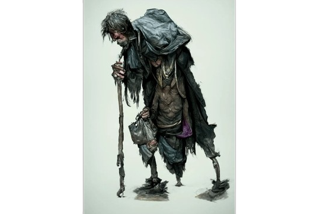
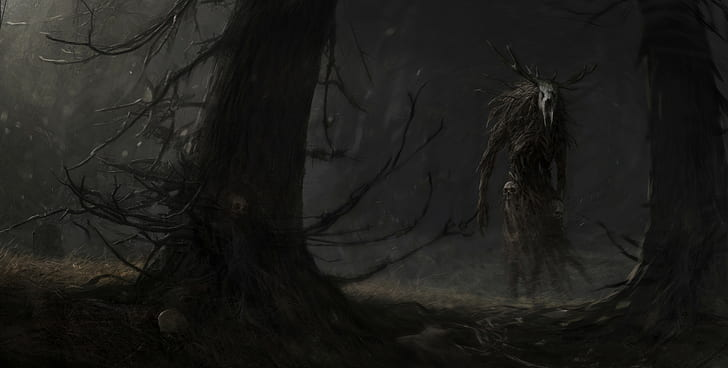
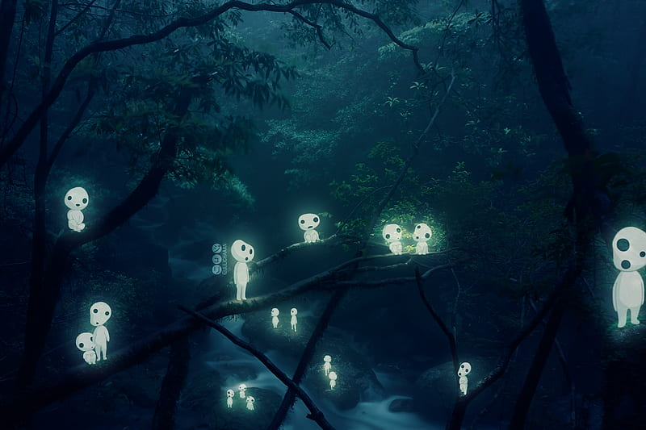
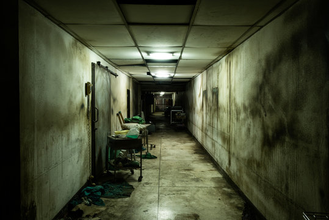

Personagens
-

Gato
No começo aparentava ser apenas um gatinho perdido e inofensivo. Mas com o tempo sua verdadeira forma começa a ser revelada, com seu violino toca músicas aterrorizantes que não te deixam dormir. Se não obedecê-lo, ele te perseguirá!
-

Mendigo
Seu cheiro é forte, impossível não notar sua presença. Sempre te observando de longe, ao sair de casa ele estará atrás de você. As coisas que ele diz não fazem sentido, mas talvez você devesse escutar.
-

Criatura da Floresta
É possível saber por onde passou, pois o caminho é marcado por sangue, pegadas grandes e pelos negros. Sua respiração pode ser ouvida de longe. Não faça barulho, pois sua audição é muito aguçada.
-

Seres Luminosos
Seres amigáveis, exceto se acordá-los. Seja gentil e eles retribuirão o favor.
-

Médicos e Enfermeiros
Não confie em nenhum deles, nada do que eles dizem é verdade. C̵̡͕̹͂̉̚͜O̴̧̢̫̟̩͊̈̆́͌̃̃͆̓̕Ṅ̵̡̺͉̙̜̻͓̝̳͈̑Ḟ̴̢͖͎͔̥͚͍̞̘Í̷̛̹̊̑͋̾̌̚Ĕ̶̞͇͕̫͙̣̙̗̻̝̈́̀̾̎̊͆̅̈́̐ ̷̧̼̼̥̻̯͎͚̑͂͋̊Ĕ̷͈̟͉̫̝̀M̸̘̬̈́͒̈́͛̐̕͘ ̷̺̆͆́̕M̷̛̫͉̪̺͙̝̦͍̀̉̏͋̽̂́́͜Í̵̧̡̤̱̳͓̻̙͍̔̀͋̓͝͝M̷̨̱͎͕̰̞̰̰̠͙͛͛̋͌͐̅̆͊̏̐!̸͎̪̰̉̍̾̋̍͗́̚͠͝